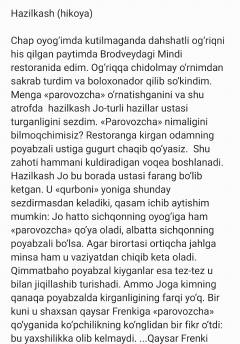

HHBrodveydagi hazilkash Jo va jiddiy Frenki o'rtasidagi kutilmagan voqealar haqida hikoya.
Ushbu hikoyada Brodveydagi restoranlarning birida sodir bo'lgan qiziqarli va kutilmagan voqealar haqida so'z boradi. Hazilkash Jo ismli qahramon odamlarga turli hazillar qilishi, xususan, badavlat va jiddiy Frenkiga qilingan hazil va uning oqibatlari hikoya qilinadi. Asar qahramonlarning o'zaro munosabatlari va hayotiy vaziyatlar orqali ochib beriladi.